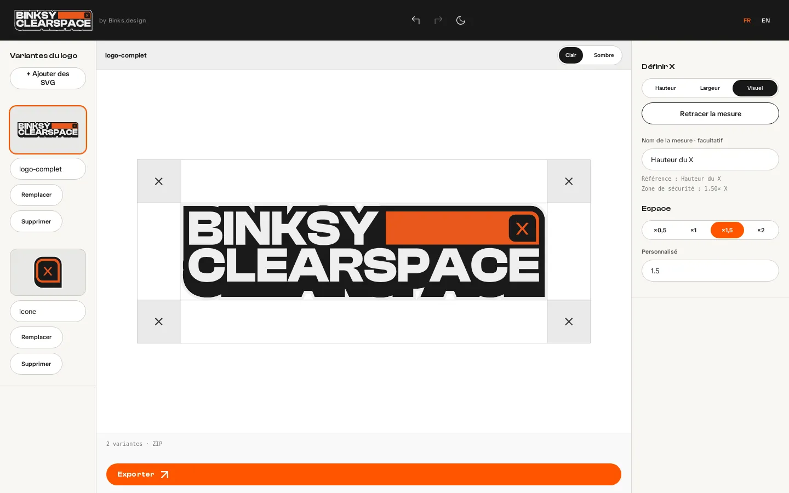
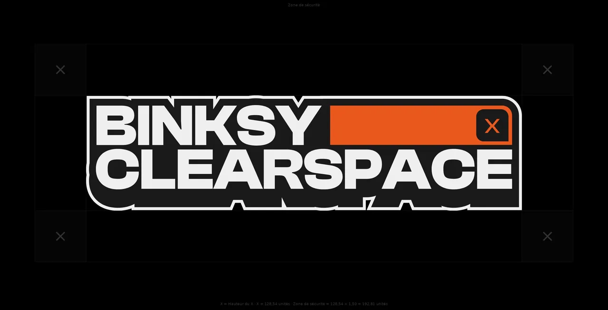
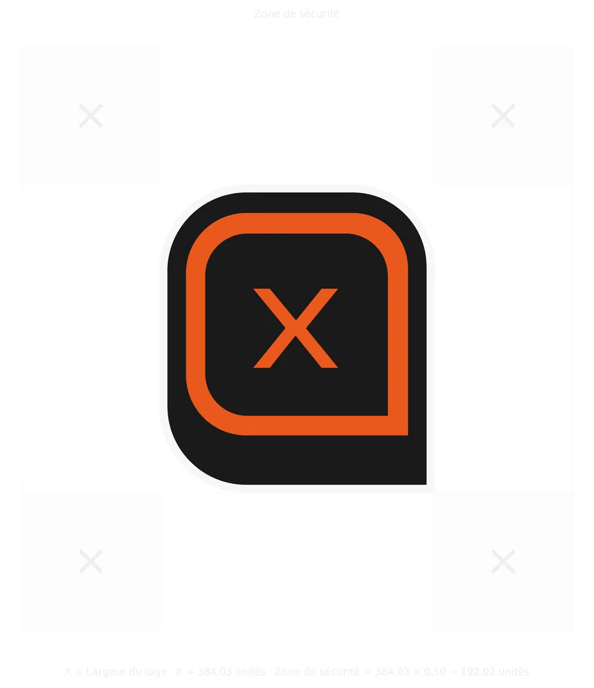
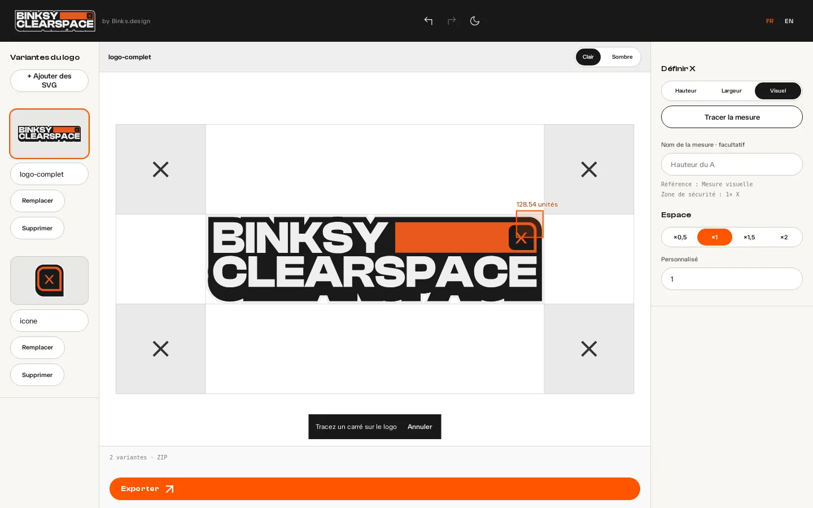
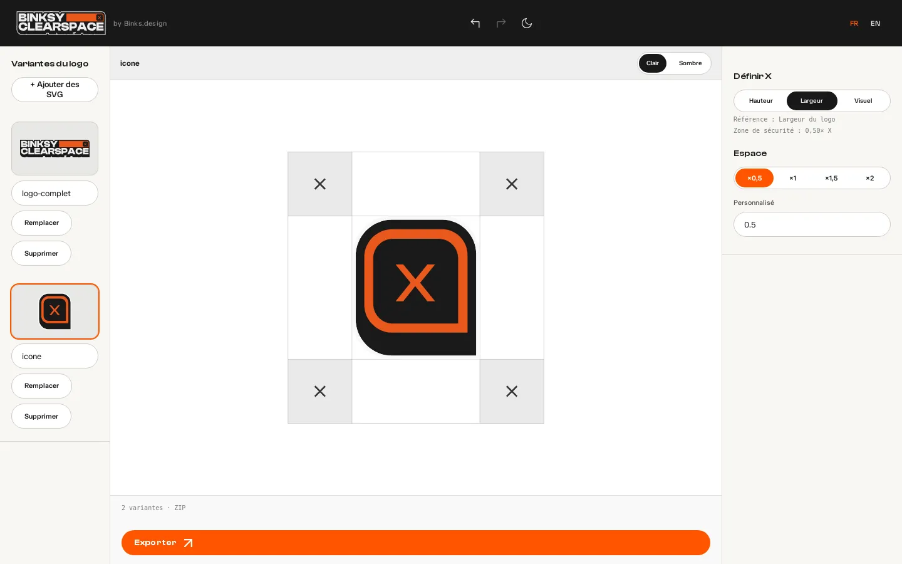
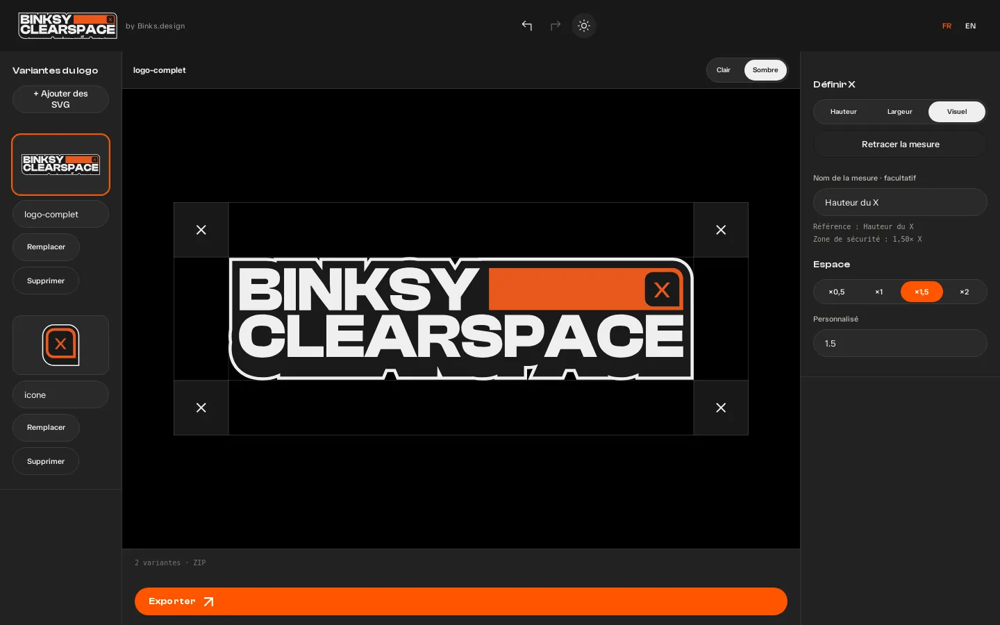
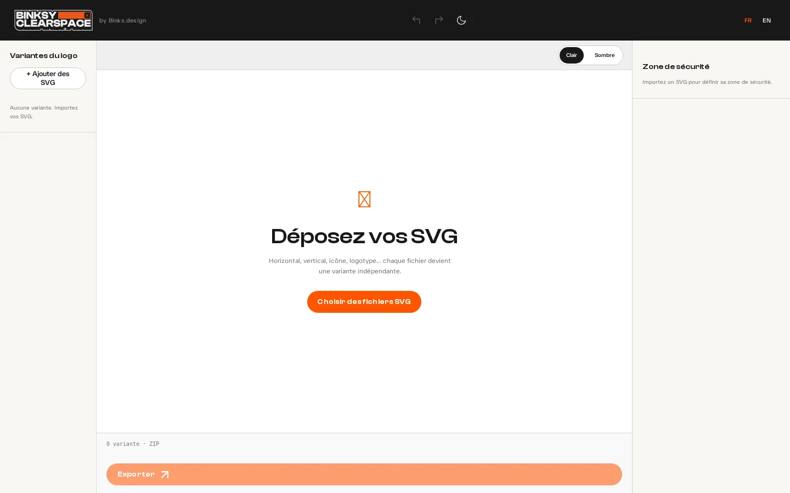

Pour les graphistes · gratuit, sans compte, tout reste dans ton navigateur
Ta zone de sécurité, en une page.
Importe tes logos en SVG, choisis ce qui sert d’unité X — la hauteur, la largeur ou une mesure tracée à la main sur le logo — puis le multiplicateur. Un clic sur Exporter : toutes tes variantes en SVG, PNG, JPEG et PDF, en clair et en foncé, dans un seul ZIP.



- 3façons de définir X : hauteur, largeur, visuel
- 4formats exportés : SVG, PNG, JPEG, PDF
- 2versions par format : claire et foncée
- 0fichier envoyé sur un serveur
Quatre gestes,un seul écran.
Pas d’étapes à valider, pas de compte : les variantes à gauche, l’aperçu au centre, les réglages à droite, le bouton Exporter en bas. Tout est enregistré sur ton appareil au fil de l’eau.
Importe tes SVG
Un ou plusieurs fichiers d’un coup, par le bouton ou en les glissant sur l’aperçu. Chaque fichier devient une variante : horizontal, vertical, icône, logotype…
Définis X
X, c’est l’unité de ta règle : la hauteur du logo, sa largeur, ou un carré que tu traces toi-même sur un élément (la hauteur d’une lettre, d’un symbole).
Choisis l’espace
La zone vaut X multiplié par 0,5, 1, 1,5 ou 2 — ou la valeur que tu veux entre 0,05 et 5. Les guides se mettent à jour sur l’aperçu.
Exporte le ZIP
Un seul bouton, aucune case à cocher : toutes les variantes, les quatre formats, en clair et en foncé, plus un fichier de recommandations.
Ta mesure,au pixel près.
En mode Visuel, tu traces un carré sur le logo. Aucun magnétisme : là où tu lâches la souris, c’est la mesure, au centième d’unité SVG. Tu peux la nommer (« Hauteur du A ») pour qu’elle apparaisse dans les exports.

Mesure nommée, ×1,5 
Icône : largeur ×0,5 
Thème sombre 
Page de départ
- 01Hauteur — X = hauteur réelle du dessin
- 02Largeur — X = largeur réelle du dessin
- 03Visuel — X = le côté du carré que tu traces
- 04Nom de la mesure — facultatif, repris dans les légendes
- 05Espace — ×0,5, ×1, ×1,5, ×2 ou personnalisé
- 06Aperçu sur fond clair ou sombre
Chaque variante garde ses réglages. Passer de l’horizontal à l’icône ne perd rien : méthode, mesure, nom et multiplicateur sont mémorisés variante par variante.
Un clic,tout le dossier.
Chaque planche montre le logo, sa zone de sécurité et la légende du calcul (« X = Hauteur du X · Zone de sécurité = X × 1,5 »). Les couleurs d’origine de ton logo ne sont jamais touchées.
- SVGVectoriel, versions claire et foncée
- PDFVectoriel, pour l’impression et les guides
- PNGFond transparent, 3000 px de large, 300 dpi
- JPEGFond blanc ou noir, 3000 px, 300 dpi
NOM-DU-PROJET CLEARSPACE/ ├─ <variante>/ │ ├─ SVG/ …-clair.svg …-fonce.svg │ ├─ PNG/ │ ├─ JPEG/ │ └─ PDF/ └─ RECOMMANDATIONS.txt
Des SVG propres,rien d’autre.
L’outil mesure le dessin réel de ton SVG, pas son plan de travail. Ce que tu fournis fait foi : il ne redessine rien et ne change aucune couleur.
- Accepté
Tes tracés SVG
Exportés d’Illustrator, Figma, Affinity ou Inkscape.
- Plusieurs fichiers à la fois
- Glisser-déposer sur l’aperçu
- Jusqu’à 3 Mo par fichier
- Dégradés et couleurs conservés
- Refusé
Ce qui bloque
Un message te dit pourquoi.
- Texte non vectorisé
- Image intégrée (PNG, JPEG…)
- Ressources externes
- Fichier sans forme visible
- Par variante
Ranger ses logos
Dans la colonne de gauche.
- Renommer (nom des dossiers du ZIP)
- Remplacer le SVG
- Supprimer
- Réglages indépendants
- Confort
Sans stress
De quoi revenir en arrière.
- Annuler / Rétablir (Ctrl/⌘ + Z)
- Thème clair ou sombre
- Interface FR ou EN
- Sauvegarde automatique
Texte dans ton logo ? Vectorise-le dans ton logiciel (Vectoriser le texte / Créer les contours) avant l’import : ClearSpace ne lit que des formes.
Rien ne quitteton appareil.
Les logos de tes clients restent chez toi : l’outil lit, mesure, dessine et zippe tout dans le navigateur.
Aucun compte, aucune clé
Pas d’inscription, pas d’IA, pas de service en ligne. Ton projet est enregistré dans le stockage de ton navigateur, et nulle part ailleurs.
Calculé sur place
Lecture des SVG, mesures, PNG, JPEG, PDF et ZIP : tout est produit localement. Aucun fichier n’est envoyé sur un serveur.
Tu reprends où tu en étais
Ferme l’onglet, reviens demain : variantes, mesures et réglages sont là. La version en ligne garde aussi l’app en cache pour marcher hors connexion.
Pilotablepar un agent.
Claude Code, Codex ou tout agent qui pilote un navigateur peut préparer les planches à ta place, en cliquant dans l’interface comme toi.
- Pas d’API JavaScript à deviner : des sélecteurs stables (
id,data-*) sur chaque commande, documentés. - Aucune clé API, aucun service en ligne : l’agent travaille dans la page.
- Règle d’or : l’agent utilise tes SVG tels quels et ne choisit pas X ni le multiplicateur à ta place sans te le dire.
# Playwright (Python) — app servie sur http://127.0.0.1:4173
page.goto("http://127.0.0.1:4173/app.html")
page.set_input_files("#ready-files", ["logo.svg", "icone.svg"])
page.click('[data-method="width"]')
page.click('[data-multiplier="0.5"]')
with page.expect_download() as dl:
page.click('[data-action="export"]')
dl.value.save_as("clearspace.zip")Prends ton logo,on s’y met.
Il te faut juste tes SVG vectorisés. Le reste se règle en quelques clics.
- Avec tes SVG
Ouvrir l’app
Dépose tes fichiers, définis X, choisis l’espace, exporte.
Ouvrir l’app - Pour tout comprendre
La documentation
Chaque réglage, le contenu du ZIP, les limites et la FAQ.
Lire la doc - Pour ton agent
Règles agents IA
Sélecteurs, parcours pas à pas et vérifications, en français et en anglais.
Agents IA